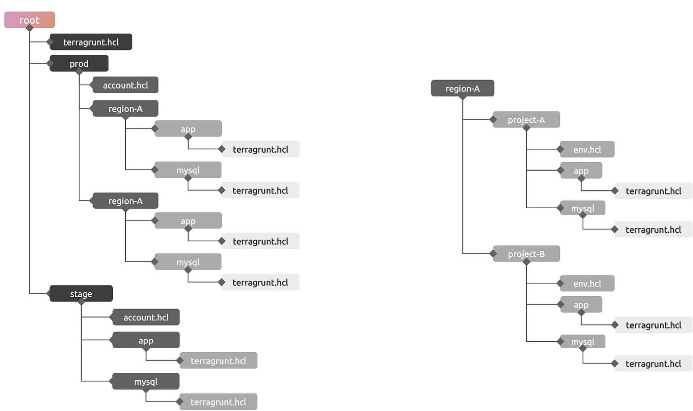
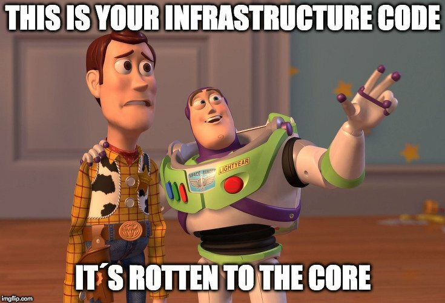
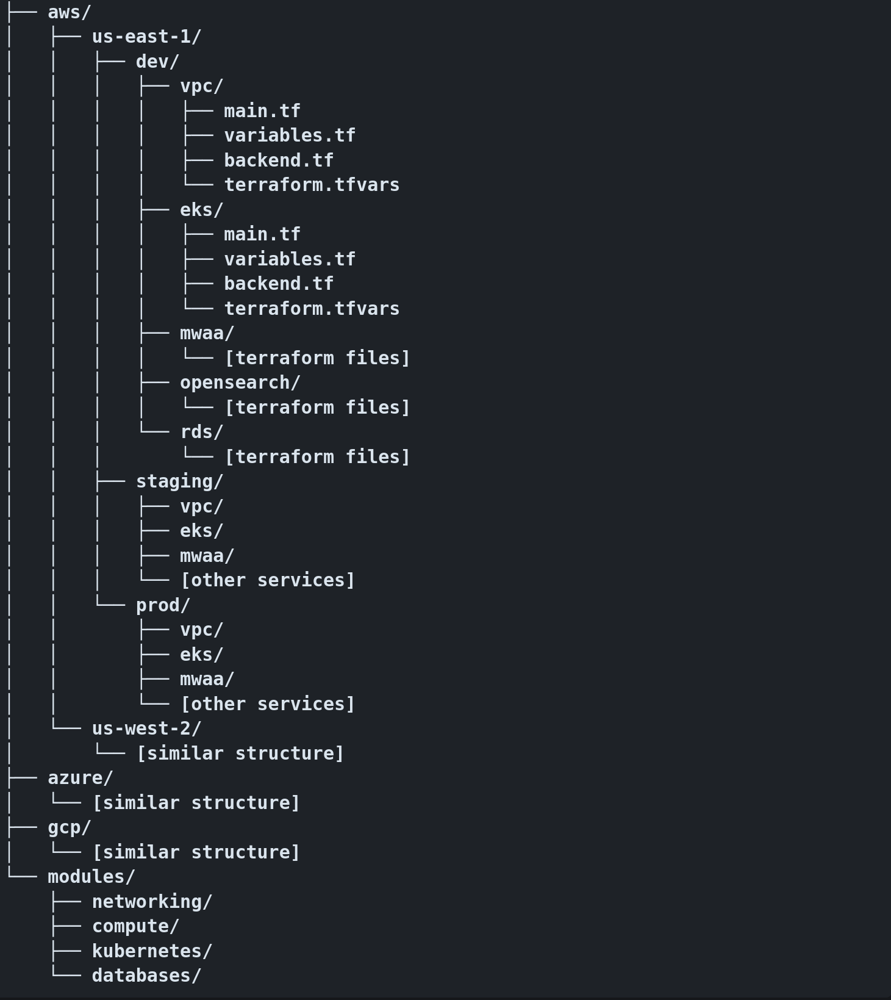

Инфраструктура как код - это почти всегда сложный выбор, когда дело доходит до скейлинга. В туториалах все просто - вот создали S3 бакет, вот EC2 машину. Домашние пет проекты тоже могут жить на условном ECS или одной машине с компоузом. Когда же ты погружаешься в реальный крупный бизнес проект сразу появляются вопросы, как организовать код для десятков взаимозависимых сервисов, на трех энвайронментах, в нескольких регионах, а иногда и мультиклауд или легаси он-прем сервисы.
Когда команды сталкиваются со скейлингом инфраструктуры - перво наперво возникает желание убрать повторения кода. Концепт DRY (Dont Repeat Yourself) пришел из software engineering, и надежно поселился в умах девопсов и системных инженеров. Разнообразные фреймворки для Terraform (такие как Terragrunt, Terraspace, Atmos etc.) предлагают единый менеджмент tf бэкендов, наследование метаданных, генерацию конфигураций на лету. Сейчас многие команды берут в работу эти инструменты, только потому что это - “best practises”. И на словах все звучит круто: “Write your infrastructure once, reuse it everywhere, maintain it in one place, and scale effortlessly!”.

Но какова цена использования этих “изящных инженерных решений” в реальном бизнесе?
3 часа ночи, и прод упал… Вам нужно понять, почему Terraform пытается уничтожить и пересоздать вашу базу данных, и вам нужно понять это вот прямо сейчас.
При использовании DRY-метода с Terragrunt и иерархическим наследованием вы не просто читаете код Terraform. Вы отслеживаете значения на нескольких уровнях: корневой файл terragrunt.hcl с базовыми конфигурациями, переопределения, специфичные для энва. Динамически генерируемые конфигурации бэкенда, абстракции модулей, которые вызывают другие модули. Переменные, каскадно передаваемые по цепочкам наследования.
Откуда на самом деле взялось это значение конфигурации базы данных? Из глобальной конфигурации? Переопределение именно этого энва? Значение модуля по-умолчанию? Вам приходиться играть в детектива и искать root cause вместо того, чтобы решать проблему. Каждый уровень абстракции добавляет когнитивную нагрузку, когда вы меньше всего можете себе это позволить, во время стрессовых ситуаций в 3 часа ночи.
Фундаментальная проблема заключается в том, что DRY-метод оптимизирует написание кода, а не его чтение и понимание под давлением.
Или на проект приходит новый сотрудник. Даем ему задачу поменять пару рулов в секьюрити группах. Вроде все просто? С тулами для DRY абстракций человеку надо не просто знать Terraform, но и изучить ваш tf фреймворк, понять иерархическую структуру конфигураций, как значения наследуются и переопределяются между слоями, и где можно вносить изменения, не нарушив работу других энвов. Онбординг превращается в передачу сакральных знаний. Работа, которая должна занимать часы, может занимать дни. Сравните это с тем, когда человек просто открыл структуру директорий и сразу увидел что как и куда деплоится? А это все разница в time-to-prod, выраженная в реальных человекочасах и деньгах.
Ну и еще один пункт - vendor lock. Ваш код, ваша команда, ваши процессы, пайплайны и документация зависят от одного фреймворка. Когда терраформ добавляет новую фичу - вы просто ждете когда она станет доступна в вашем фреймворке. А смигрировать отсюда к другому подходу становится непосильной задачей.

Есть ли альтернатива?
Есть. И это Бритва Оккама, или Keep It Simple, Stupid (KISS). Или просто не тащить в проект модные фреймворки и “бест практики”, когда для них нет реальной необходимости! На 90%+ проектов со всеми задачами и скейлингом справится обычный базовый терраформ и пайплайн оркестрация в вашем Github/Gitlab.
Да, сложность никуда не уходит. Как и факт того что у нас есть разные энвы, регионы, и между ними нужна координация. И вопрос не в том “как нам минимизировать сложность”, а в том “куда нам переместить сложность, чтобы минимизировать значение time to business”.
DRY метод: сложность в тулах абстракций и наследуемых конфигуарциях.
KISS метод: мы используем плоскую структуру кода без цепочек наследуемых конфигураций, а сложность перенесем в CI/CD пайплайны, где все можно удобно мониторить и дебажить.
Вот пример простой плоской структуры Terraform кода:

- Можем разбивать как по сервисам, так и по логическим группам.
- У каждого сервиса свой state файл, isolated blast radius, нет проблем с дебагом огромных стейтов.
- Централизация модулей в одном месте
- Легкая навигация, Just grep it (c)Nike ✔
Каждая директория - это отдельный терраформ деплоймент. Открой aws/us-east-1/prod/eks/ и ты увидешь что конкретно задеплоено для EKS в это регионе и этом энве. Без наследований, автогенерации и прочей магии.
Да, у нас везде повторяется конфгурация бэкендов, например
# aws/core-infrastructure/prod/backend.tf
terraform {
backend "s3" {
bucket = "myorg-terraform-state-prod"
key = "core-infrastructure/terraform.tfstate"
region = "us-east-1"
encrypt = true
dynamodb_table = "terraform-state-lock-prod"
}
}
Адептов DRY такое бесит :) Но я могу сказать, что ты всегда легко видешь в каком бакете лежит стейт этого сервиса, а в какой таблице стоит лок. Тебе не надо понимать логику динамической конфигурации бекенда. Стоимость повторения - 100 строк простого YAML-а для 20 энвов. Преимущество — мгновенное устранение неполадок, отсутствие когнитивной нагрузки и полная ясность того, что где находится. 100 строк кода vs 40 часов изучения terragrunt, где лучше ROI?
А где происходит вся магия? В Github Actions пайплайнах.
Pull Requests:
- Авто-детектим энвайронмент по файловому пути
- Прогоняем terraform plan
- Прогоняем security/complience checks
- Выводим план в PR коменты и блочим мерж в случае падений
Main Branch:
- авто-детект энва
- terraform apply с ручным апрувалом
- алерты в случае падений
- трекаем configuration drifts и создаем тикеты
Scheduled:
- Сверяем состояние с кодом и делаем drift detection по всем энвам
- Алерты на непредвиденные состояния
Мы получаем инфраструктуру, которую просто менеджить и расширять. В команду проще найти специалиста с глубоким знанием CI/CD, чем со знанием конкретного Terraform фреймворка. У команды уходит меньше времени на траблштутинг и больше времени на прямые business-values.
Но это же не скейлится?!
Скажите, как много вы работали на проектах, с сотнями энвайронментов? На десятки - скейлится вполне, при этом давая изолированные изменения и ограниченный бласт радиус. Часто команды думают про мифический скейл в будущем, но по факту получают излишнюю сложность уже сегодня, не доживая до того времени, когда можно извлечь реальную выгоду от абстракций IaC фреймворков.
Вам нужен KISS если:
- Количество энвов измеряется единицами или десятками
- Меньше 50 инженеров в команде
- Невысокая change frequency (обычный паттерн - мы подняли инфраструктуру один раз и она не меняется)
- Цена ошибки в инфрастуктурных изменениях очень высока (высоконагруженый прод, регулируемые отрасли бизнеса)
- У нас нет полноценной platform-команды системных инженеров
Вам нужен DRY если:
- У вас сотни энвайронментов
- У вас полноценная сильная команда platform инженеров, которые шарят в сложных абстракциях, как лось по кукурузе))
- Эта же команда может разрабатывать и поддерживать свои in-house решения поверх базовых tf фреймворков (на это есть люди и деньги)
- Вы строите infrastructure-as-a-product
Вывод - на новых проектах начинай с простого. Строй постепенно, увеличивай сложность только когда для этого есть реальная необходимость. Думай о business values и не принимай решений, если они обусловлены только “инженерной красотой” этого решения. При прочих равных, чаще для всех будет выгоднее выбрать “Old Boring Technology”, вместо “New Fancy Silver Bullet”.
И удачи на проектах ;)
Спасибо что дочитали, подписывайтесь на tg канал https://t.me/ai_vs_devops :) Следующей будет вторая часть статьи про AI-разработку со Spec Driven Development методологией.